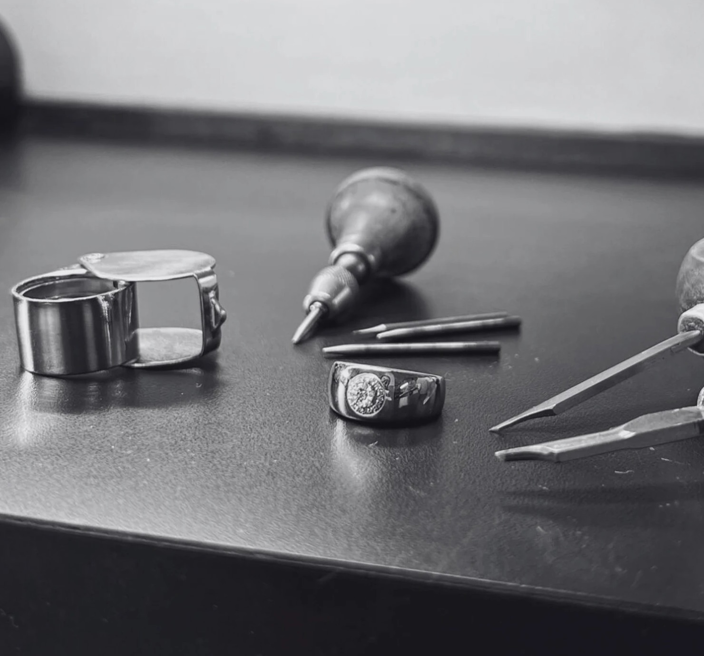

Atelier Voto
Objetos de compromisso desenvolvidos a partir da pedra, da forma e de quem irá usá-los.

Arquitetura de compromisso.
Iniciar uma consulta
A pedra
Atlas Mineral
A forma
Série VOTO
Quem irá usar
Consulta